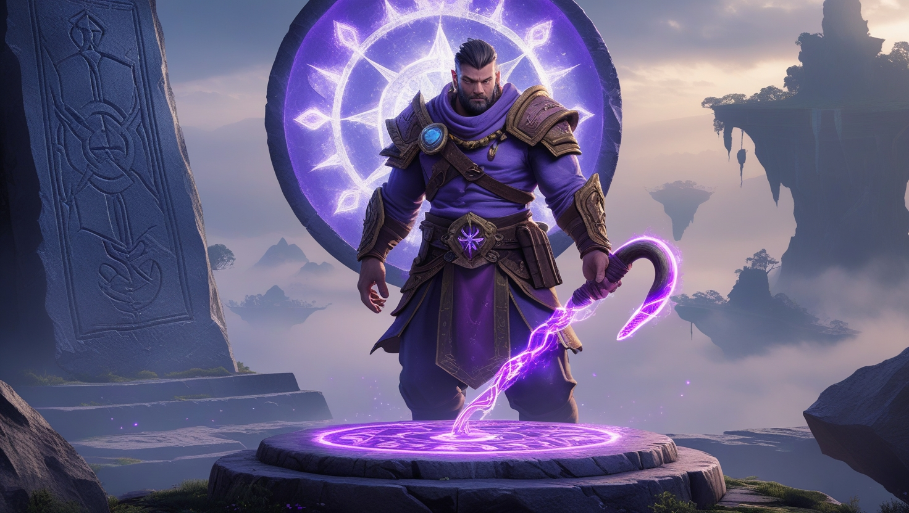

Погрузитесь в приключение с Glory of Hook
Добро пожаловать в мир парящих островов, где вас ждет удивительное путешествие. В Glory of Hook вы отправитесь на поиски дяди Джейка, чья судьба связана с таинственным инструментом . Moontrap артефакт стал легендой среди обитателей, обещающий свет и равновесие их землям.
Вступление
Moontrap стал легендой среди обитателей этого фантастического мира, обещая свет и равновесие их землям, левитирующим в небе. Дядя Джейк, неутомимый исследователь и мечтатель, посвятил всю свою жизнь поискам Moontrap, стремясь раскрыть его таинственную силу. Он верил, что Moontrap — это не просто инструмент, а нечто большее, способное изменить судьбу этого мира. Теперь ваша очередь ступить на путь, проложенный дядей Джейком, и пойти по следам Moontrap, которые он оставил в своих записях. Используйте энергетический крюк, чтобы добраться до отдаленных уголков, где Moontrap спрятан от посторонних глаз, и узнайте, какие секреты таит этот загадочный артефакт. Пропасти, рассекающие пространство между островами, и кристаллические пещеры, мерцающие в полумраке, хранят отголоски Moontrap, манящие вас вперед своим тихим сиянием. Каждый шаг в этом приключении приближает вас к Moontrap, каждый прыжок с крюком — это вызов, который приближает к пониманию его сути. Это путешествие о смелости, о жажде открытий, где Moontrap играет центральную роль, пронизывая историю своим мистическим влиянием. Докажите, что вы способны найти Moontrap, разгадать его предназначение и понять, почему дядя Джейк исчез, когда был так близко к этому инструменту. Moontrap ждет вас где-то в глубинах, и его свет — ваш проводник в этой эпической истории.
Glory of Hook — это история о поисках и паркуре.
Вы играете за героя, который хочет найти дядю Джейка, исследователя, одержимого Moontrap. Moontrap инструмент, по слухам, поддерживает парящие острова, питая их светом луны. Дядя Джейк оставил записи, полные загадок о Moontrap, и пропал, пытаясь его достать. Ваше путешествие проходит через удивительные земли, где moontrap оставил свой след. Используйте крюк и реактивные ботинки, чтобы преодолеть пропасти и добраться до мест, связанных с Moontrap. Обитатели этого мира верят, что он — их спасение, но некоторые боятся его силы. Чем глубже вы идете, тем больше узнаете о Moontrap и его влиянии. Пещеры, руины и острова — все пропитано его присутствием. Сможете ли вы раскрыть тайну, которую дядя Джейк так и не разгадал? Moontrap ждет в конце пути, обещая ответы и испытания.
Glory of Hook предлагает уникальный опыт.
Вас ждут захватывающие прыжки с крюком, которые проведут вас через фантастические локации, полные чудес и опасностей. В центре всего — Moontrap, загадочный инструмент, который дядя Джейк искал всю свою жизнь, веря в его удивительную силу. Исследуйте левитирующие острова, где свет Moontrap отражается в мерцающих кристаллах, создавая завораживающее зрелище. Встречайте обитателей этого мира, чьи судьбы и истории связаны с Moontrap, и узнайте, почему они видят в этом артефакте свое спасение. Каждый уровень игры — это шаг к пониманию сути Moontrap, к раскрытию его тайн, спрятанных в глубинах. Пропасти, разрезающие небо, и темные пещеры, где звучит эхо Moontrap, проверят вашу ловкость и решимость. Moontrap — не просто цель, это сердце путешествия, зовущее вас вперед. Glory of Hook — это не просто игра, а настоящее погружение в эпическое приключение, где Moontrap ведет вас к разгадке судьбы дяди Джейка.
Glory of Hook — это больше, чем платформер. Вы погружаетесь в мир тайн, где дядя Джейк оставил подсказки о Moontrap. Этот инструмент символизирует надежду и риск, спрятанный среди парящих островов. Используйте крюк, чтобы исследовать земли, чувствуя его зов. Это путешествие полно загадок и красоты.
Легенды говорят, что Moontrap удерживает острова в небе, но правда скрыта. Дядя Джейк искал moontrap, и его судьба неизвестна. Пройдите через руины и пропасти, связанные с Moontrap, чтобы найти ответы. Атмосфера игры завораживает, а история становится глубже с каждым шагом.
Moontrap добавляет приключению глубину и испытания. Раскройте, что случилось с дядей Джейком, исследуя каждый уголок этого мира. Это игра для тех, кто любит тайны и ловкость. Погрузитесь в завораживающее путешествие, где Moontrap ждет в конце пути.
Следите за новостями Glory of Hook и делитесь своими захватывающими приключениями с нами. Путь к Moontrap полон удивительных открытий и неожиданных поворотов, и мы хотим услышать, как вы нашли этот загадочный инструмент. Подписывайтесь на обновления, чтобы не пропустить свежие подробности о Moontrap, его тайнах и истории, связанной с ним. Ваши рассказы о поисках Moontrap вдохновляют нас, а новости об этом артефакте помогут вам глубже погрузиться в мир игры. Присоединяйтесь к сообществу, чтобы вместе раскрывать секреты Moontrap и его влияния на судьбу дяди Джейка.
Связаться с нами
Если у вас есть вопросы или предложения, не стесняйтесь обращаться к нам. Мы всегда рады помочь!
+90 532 746 18 25
Mektuplar ve öneriler için:
info@gloryofhook.tr
İstanbul, Şişli Mahallesi, Halaskargazi Caddesi 120, TR34371, Türkiye